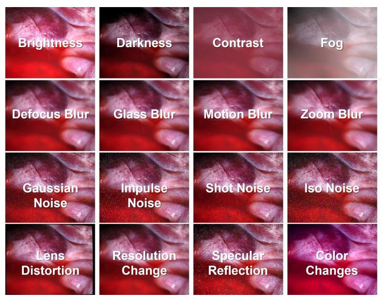
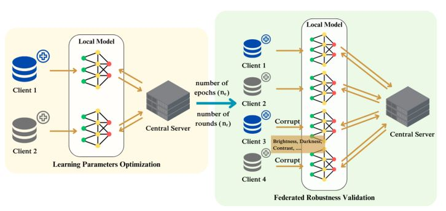
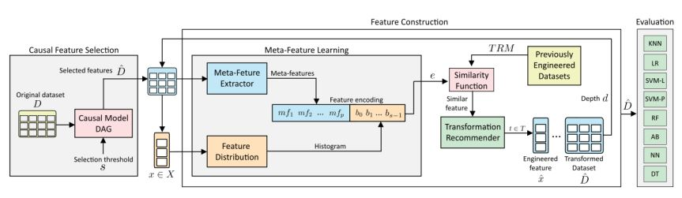
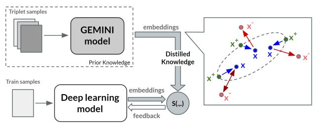

|
Ivan Reyes-Amezcua I'm a PhD student in Computer Science at Center for Research and Advanced Studies (CINVESTAV), where I research the robustness and security of deep learning models, with a current focus on medical imaging. I'm part of the CV INSIDE Lab. My advisors are Dr. Andres Mendez-Vazquez and Dr. Gilberto Ochoa-Ruiz. My work explores adversarial robustness and has been presented at major international conferences in AI and computer vision. I lead applied AI projects focused on LLMs, NLP, and speech technologies, designing scalable MLOps pipelines for real-world deployment. I also teach machine learning and data science at both graduate and undergraduate levels, and actively contribute to the research community through mentoring, organizing tutorials, and participating in outreach initiatives. |

|
ResearchI'm interested in computer vision, deep learning, generative AI, and robust machine learning. My research focuses on building models that can better understand and generalize across real-world scenarios, particularly in medical imaging. I work on improving model robustness against adversarial and natural corruptions, and developing federated learning techniques for privacy-aware and scalable AI. |

|
Enhancing Image Classification Robustness through Adversarial Sampling with
Delta Data Augmentation (DDA)
Ivan Reyes-Amezcua, Gilberto Ochoa-Ruiz Andres Mendez-Vazquez CVPR - LXAI Workshop, 2024 (Oral Presentation) A novel technique that boosts adversarial robustness by injecting perturbations from robust models into new tasks. Unlike traditional attacks, DDA enriches training with diverse, transferable adversarial signals, improving defenses across multiple datasets. |
|

|
EndoDepth: A Benchmark for Assessing Robustness in Endoscopic Depth Prediction
Ivan Reyes-Amezcua, Ricardo Espinosa, Christian Daul, Gilberto Ochoa-Ruiz, Andres Mendez-Vazquez MICCAI - Data Engineering in Medical Imaging (DEMI) Workshop, 2024 (Oral Presentation) Arxiv Code Dataset A benchmark for evaluating the robustness of monocular depth estimation models in endoscopic scenarios, featuring real-world image corruptions. Alongside it, we propose a new metric, mDERS, and release SCARED-C, a dataset tailored to assess performance under challenging endoscopic conditions. |
|

|
Leveraging Pre-trained Models for Robust Federated Learning for Kidney Stone Type Recognition
Ivan Reyes-Amezcua, Michael Rojas-Ruiz, Gilberto Ochoa-Ruiz, Andres Mendez-Vazquez, Christian Daul MICAI, 2024 (Oral Presentation, Best Paper Award) Arxiv A robust Federated Learning framework that leverages pre-trained models to improve kidney stone diagnosis while preserving data privacy. Our two-stage method—Learning Parameter Optimization and Federated Robustness Validation—boosts both accuracy and resilience to image corruptions across decentralized datasets. |
|

|
MACFE: A Meta-learning and Causality Based
Feature Engineering Framework
Ivan Reyes-Amezcua, Daniel Flores-Araiza, Gilberto Ochoa-Ruiz, Andres Mendez-Vazquez, Eduardo Rodriguez-Tello MICAI, 2022 (Oral Presentation) Arxiv Code A novel feature engineering method that combines meta-learning and causal analysis to automate the search for high-impact feature transformations. By encoding feature distributions and selecting causally relevant inputs, MACFE significantly improves prediction perform |
|
|
Adversarial Robustness on Artificial Intelligence
Ivan Reyes-Amezcua, Gilberto Ochoa-Ruiz, Andres Mendez-Vazquez Book ChapterWhat AI Can Do: Strengths and Limitations of Artificial Intelligence, 2024 This chapter explores the critical need for evaluating the robustness of deep learning models, especially in safety-sensitive applications. Focusing on adversarial attacks, we highlight the vulnerabilities of neural networks to small, targeted input changes and emphasize the importance of developing reliable techniques to ensure trustworthy AI systems. |
|

|
Guided Deep Metric Learning
Jorge Gonzalez-Zapata, Ivan Reyes-Amezcua, Daniel Flores-Araiza, Mauricio Mendez-Ruiz, Gilberto Ochoa-Ruiz, Andres Mendez-Vazquez CVPR - LXAI Workshop, 2022 A novel approach designed to improve generalization and manifold representation under distributional shifts. By combining a multi-branch master model with a student model in an offline distillation setup, our method achieves up to 40% performance gains in visual similarity tasks through more compact and robust clustering. |